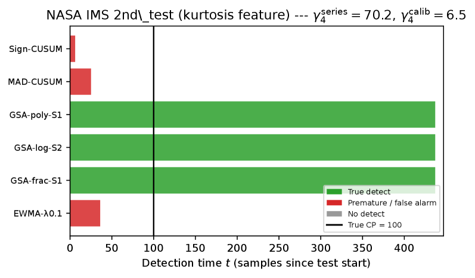

Core theorems of a sequential change-point detection framework are formally verified in Lean 4.
Abstract
Sequential change-point detection in non-Gaussian stochastic processes is challenging because the underlying densities are rarely known in real time. Classical parametric procedures such as CUSUM lose optimality under distributional mismatch, whereas nonparametric alternatives often react slowly. We develop a unified framework that approximates the log-likelihood ratio (LLR) on a generalized stochastic basis – polynomial, logarithmic, or fractional-power – using only moments up to order 3s, with no analytic form of the distribution, and thereby adapts the classical CUSUM, GRSh, and SRP procedures to non-Gaussian data. The convergence functional J(s) = K^T Y is interpreted as the projection of the Kullback-Leibler divergence onto the basis span, yielding a formal criterion for selecting the approximation order. We target the regime of small relative change-points, where the signal energy changes little but the shape of the distribution – tail structure and modality – does. A robust threshold follows from Kunchenko's probability-error bound (KU-PE), which controls the false-alarm rate without empirical tuning. On nine public benchmarks across four domains, the method is, to our knowledge, the only one operative on extremely heavy-tailed data (excess kurtosis gamma_4 > 20), where classical methods produce 100% false alarms, while reducing the detection delay at a guaranteed false-alarm level. The core theorems are formally verified in Lean 4.
Problem
Sequential change-point detection in non-Gaussian stochastic processes is difficult because the underlying densities are rarely known in real time. Classical parametric methods like CUSUM lose optimality under distributional mismatch, while nonparametric alternatives react slowly. The regime of small relative change-points, where distribution shape changes but signal energy does not, is especially challenging.
Approach
The paper develops a unified framework that approximates the log-likelihood ratio on a generalized stochastic basis (polynomial, logarithmic, or fractional-power) using only moments up to order 3s, requiring no analytic form of the distribution. This approximation adapts classical CUSUM, GRSh, and SRP procedures to non-Gaussian data. A robust threshold follows from Kunchenko's probability-error bound (KU-PE) to control the false-alarm rate without empirical tuning. The core theorems are formally verified in Lean 4.
Results
On nine public benchmarks across four domains, the GSA method is the only one operative on extremely heavy-tailed data (excess kurtosis > 20), where classical methods produce 100% false alarms. Using polynomial approximation of order s=3 reduces detection delay for weak changes by 30-36% in strongly skewed environments relative to classical CUSUM.

Figure 9: NASA IMS 2nd_test, feature = vibration kurtosis. The true CP is at position 100 (black vertical line). Six GSA variants (green) trigger after the CP — true detections; classical Sign-CUSUM, MAD-CUSUM, EWMA (red) trigger before the CP — false alarms. \gamma_{4}^{\text{series}}=70.16 for the full series, \gamma_{4}^{\text{calib}}=6.5 for the calibration subsample. Source data: paper/shared